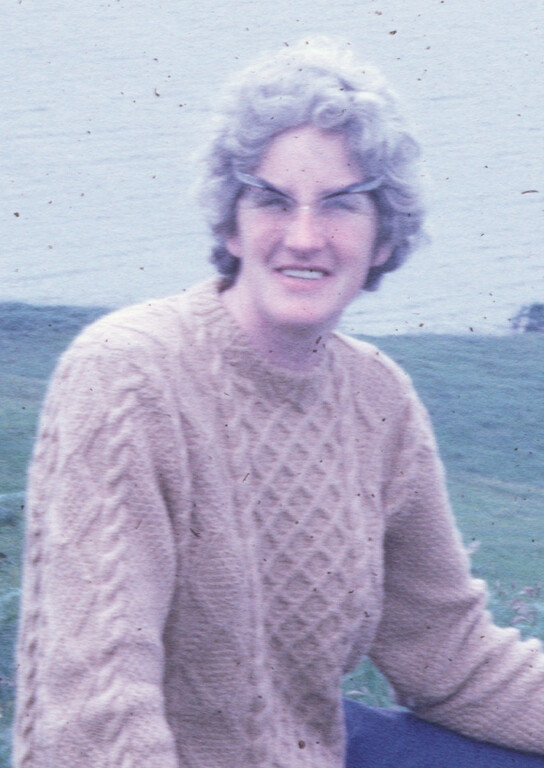
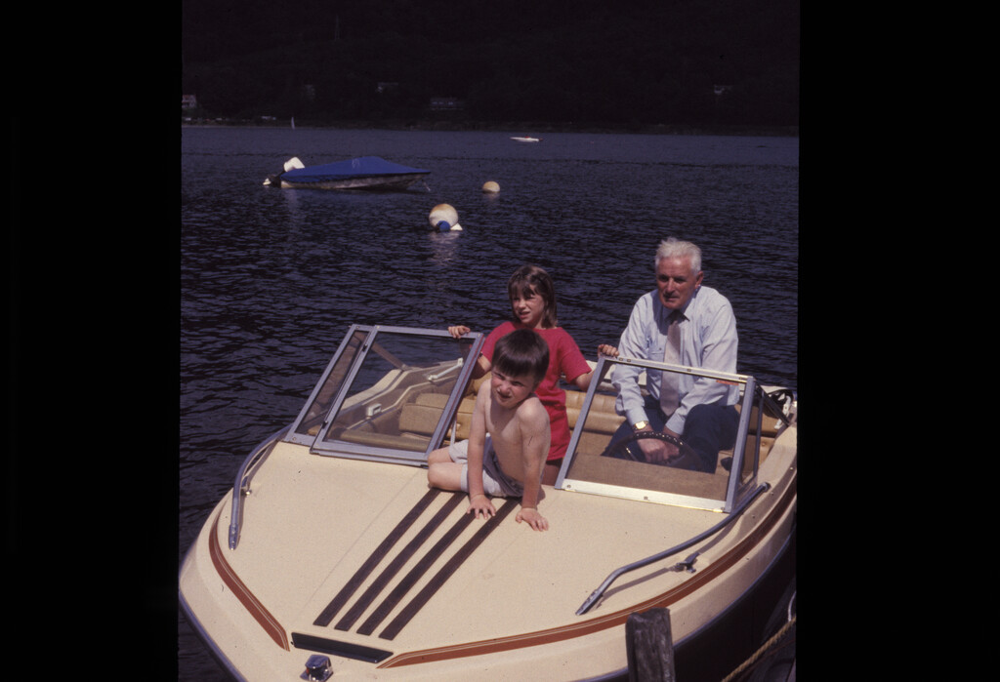

Aileen Stiven Small
a.k.a. Aileen Masterton
a.k.a. Affy Skinny Mesterton

Aileen Stiven Masterton was born on the 20th July 1928, the daughter of Anson Masterton and Helen, nee McKay. She was the younger of their two children, and, no doubt, something of a pleasant surprise, or perhaps a shock, her brother John having been born 14 years earlier.

Although
John and Aileen remained close siblings for all their lives together,
until he died at the grand old age of 93, he was, being that bit
older, a terrible tease. “Your name isn’t really Aileen
Masterton” he would tell her, in his characteristically hoarse
voice “it’s Baileen Murgatroyd, and your nose is as long as the
Tay Bridge. Everyone else can see it but you”.
The family lived in Downfield, in Dundee. Anson was at that time a pattern maker at Robb Caledon shipyard, before taking over what, for decades, and through three generations would be the Masterton family business. Initially a Greengrocer and latterly known as “Johnny Ahthin’s, Masterton’s was, and still is on the corner of Arklay Street and Clepington Road.
After a short spell in Mains Loan, the family did what many shopkeepers do, and lived ‘above the shop’. After primary school and the infamous ‘Eleven plus’, Aileen was educated at Morgan Academy, where she excelled academically and in music. Willowy of stature, her leather music satchel, gifted by her proud parents, carried her initials- A.S.M.
“Hey” the boys would taunt “what does that stand for? Affy Skinny Mesterton”.
Although schooldays were at the Morgan, Sundays were for Herman Hall, where Anson was a regular leader and contributor, and where a lifelong grounding in Aileen’s Christian faith was born.
It’s worth remembering that those were the days that led up to the Second World War. John went off to join the RAF, leaving Aileen as a 12 year old girl, out with her friends, when the bombs fell on Baxter Park and the Taybank works. She ran all the way home, fearful that the bomber was trying to hit her and her alone.
After the war, and after the Morgan, came University. An unusual thing for a woman in those days, particularly when she chose to study Maths and Sciences.
And along with studying at the University of St Andrews, came romance.
By that time, Aileen had been Baptised by full emersion in the Hermon Hall. The elderly man tasked with the joyous duty took one look at this tall young woman before him, then whispered
“Lassie Eh’ll put ye under but as for getting back up, you’re on yer ain’”
At that time there was a thriving group of young Christians, coming from the Evangelical churches in the centre of the city- Hermon, Ward Road and Rattray Street Baptist Churches, and the ‘Tent Mission’. A favourite adventure was to head off to the Kessock Convention in the Lake District, a residential Bible Study summer school that still thrives to this day. It was there that the young Aileen would begin a romance with an even younger medical student who was church organist and choirmaster at Rattray Street Baptist Church.
When Ramsay George Small came a courting, Anson would often be putting out the shop cats, and would catch them canoodling in the closie (a tale shared more than 70 years later with way too much detail). “Hey” he would shout “Eh’ll chase ye” before sending Ramsay sprinting down Arklay Street towards the safety of home.
Anson, who was to leave Granny Masterton a widow far too young, had a wonderful turn of phrase.
“See her” he once said of the woman across the lobby- “half of her lees are no true”.
Married to Ramsay in Rattray Street on 29th September 1951 Aileen had crossed the invisible divide between Bretheren and Baptist, never to return.
They set up home in their flat on Lochee Road, although I pity the removal men who had to get her Baby Grand Piano up three flights of stairs.
Ramsay was still a student, so Aileen was to be the bread winner.
Having graduated with an Honours B.Sc,, and clutching her Post Graduate Teaching Certificate, she set off into the world of teaching in 1950, at Logie School in the west end of Dundee.
After Ramsay’s graduation, family would follow- Ronald in 1954, and Douglas a year later. Home was still Lochee Road, and with Ramsay working the kind of killer hours that Junior Doctors did in those days, a well deserved Saturday long lie was worth coveting, although not, when you live in a flat, at the expense of your two toddler children deciding to make a paddling pool of your living room floor while you slept.
The family moved around after that- National Service in Crail saw them based in Anstruther, then after Kenneth came along in 1958, a move to the west- Kenmuir Street Glasgow then Irvine Ayrshire, where the last of their boys was born.
Returning to Dundee in 1961 was a move with mixed emotions. Her mother Helen (or Nellie, or Lala as she liked to be known) was by now a widow, and missed her daughter. At the same time, a job as Deputy Medical Officer for Health was a Public Health opportunity for Ramsay that would prove to be the beginning of an impressive and influential career.
But where to stay? Four growing boys, bursting with energy, up to pranks and high jinks. Broughty Ferry it was then, and thus began an almost 60 year association with 46 Monifieth Road, a home purchased for the dazzling price of £1,850.
Just as significantly, thus began an almost 60 year association with Broughty Baptist Church.
Broughty Baptist, at that time, was teetering on the point of closure. Its faithful but tiny membership was one prayer meeting short of closing the doors. In fact Reg Burgess the church Secretary had prayed “Lord send us a family that can carry on the work of this Church or it is finished”.
Then, weeks later, in walked (or in my case prammed) the Smalls.
Through the 60’s the four be-kilted Small boys were a common sight walking down St Vincent Street on a Sunday morning, and again on a Sunday evening. Even the live broadcast of the 1970 World Cup final was not an acceptable reason for missing the evening service.
If you were good, there was a tube of Rowantree Fruit Gums from Betty Kinloch, if you weren’t, there was ‘that look’ from mum, and the threat of the ‘yard stick’ when you got home. This mighty metre of Walnut, brass tipped at either end, had been Anson’s measure from his ship building days, and struck more fear into our hearts than mum’s Lochgelly tawse- she was laughably useless at giving anyone the belt.
Church life saw Ramsay become a regular preacher, and church Secretary for Decades, as well as being an active member of the Broughty Churches Council and, in 1973, President of the Baptist Union of Scotland. Aileen threw herself into the Sunday School, the WA, anything that needed done frankly, before becoming one of the first women Deacons in Scottish Baptist history.
1960’s holidays for the family beggar belief. Rather than take these four hyperactive boys somewhere exciting, we got wet cold Strontian, even wetter colder Skye, and the absolute nadir of Small vacations, Poolewe Wester Ross. Aileen would kit us out in hand knitted jumpers, anoraks from John’s shop, and rainmates- yes- boys in rainmates- [even more embarrassing than the kilts]- before sending us out into the fields to be sacrificed to the midgies and the cleggs and the every present always pouring rain.
A marginal compensation for such summertime torture was a walk ‘down the ferry’ to Goodfellows for a box of Chocolate Violets. On one such occasion Aileen and her mother were stopped by a stranger.
“Are these 4 boys all yours” she asked
“Yes they are”
“fower bairns, and all of them boys… what a tragedy”
At which point, Nellie, hackles up pitched in. “Well she doesn’t think it’s a tragedy”.
On reflection, when I think of what we put her through, I often wonder if the stranger had a point.
Nellie also paid for Aileen’s driving lessons- all of them, and there were many, passing her test on the 4th attempt, us boys were terrified into silence in the back seat as our father tried to teach her the skill of driving that he himself had barely mastered. Perhaps those days were be the first airing of his regular outburst of
“you stupid woman”, that was used so regularly for the rest of his life.
The ‘70’s brought a return to teaching, at Stobswell then the Grove,. This decade also brought the fashion disaster that was the Bright Red Crimpoline Trouser Suit. To be fair, holidays had been upgraded to Cornwall and Devon, although the 70’s also saw the first appearance of the infamous ‘blue rinse’.
Long before Mollie Sugden had brought Mrs Slocombe to the screens in ‘Are you being served’, Aileen’s prematurely white hair (a family gift available to all generations) had developed an odd, and strangely purple hue.
Being a pupil at the same school where your mum teaches is, shall we say, an acquired taste.
“Hey Smallie- your mum’s got purple hair”
“I know that, did you think I hadn’t noticed”?
“Eh well, she’s a terrible teacher too”
“I know that, do you think I hadn’t noticed- but just remember, it’s me that’s marking your Ink Exercises”.
The 70’s also brought a departure from the ‘yardstick’, as an increasingly difficult Doug forced his mother into the ultimate equaliser- the hairbrush. Now Doug claims that one of these was once broken on his head, and I do remember enjoying the spectacle, but to be fair, he must have deserved it.
Hitting ‘that certain age’ with us lot in the house must have been exasperating. Waterfights on the house roof, cricket balls through bedroom windows, neighbours at the door following apple plundering expeditions, and of course the infamous illegal UHF radios with which we broadcast cheeky comments about neighbours on the same wavelength as BBC2!
On one infamous occasion, prompted by an argument about the driving rights to the wee red mini, Ronald exclaimed in desperation “oh give me a knife”! “With pleasure” was Aileen’s equally exasperated reply.
But these difficult days, like number 10 Busses, passed by Monifieth Road and faded into the distance, to become memories to smile about, stories to tell grandchildren.
The late ‘70’s and early ‘80’s brought daughters-in-law, First Sandra then Christine, Linda and Moira. Following along behind. again like buses, came
{Moraig and Fiona Andrew Maggie and Neale Stewart Lorna Claire and Alison.}
These 9 were much loved, much provided for, taxi-d to clubs and outings, enrolled in the Girls Burgade (well the girls anyway), where Aileen had become an Officer. They were even permitted to re-create the paddling pool incident at Granny and Papa’s house, and were, in general-spoiled and supported nurtured and nourished.
On the subject of nourishment, it’s a wonder, mind you, that any of us are here today. Aileen’s kitchen could never be described as a shining example of infection control. In fact shining isn’t a word I would commonly associate with her kitchen at all! In that place, sell by dates have always been an irrelevance, milk would be off when it smelt off, her home made jam would have the mould scraped off before spreading- or pouring- onto toast, and all done in a kitchen where the washing dried above the cooking fat on a pulley system forever referred to as “the sticks”.
Going to school with clothes smelling of bacon and egg was a common occurrence, and it was only after getting married myself that I realised that you could actually buy purpose made dusters, rather than recycling an old pair of dad’s underpants for the task.
But I digress. The family were now scattered across Scotland, in Glasgow, Carluke, Perth and Peterhead, so the freedom brought about by retirement for Ramsay and Aileen allowed them not only to visit their growing family, but to travel extensively, first in the UK, and latterly, putting her legendary fear of open water to one side, on the continent.
A woman who wouldn’t get on the ‘Fifie’ if there were white horses in the Tay set aside her fears so that Ramsay, her husband of all those years, could sit drinking coffee in St Mark’s Square Venice, and watch the sun go down on Galway Bay.
And the dying of the light over Western Ireland was mirrored by the reality of their 52 year partnership. All marriages end in tears. There is a time for everything, and everything in its time, and so it was that this Golden couple would be separated, if only for a season. When our father died in 2003, she bore grief and the single life that followed with courage, fortitude, stubbornness and grace.
There was a side to Aileen that could seem perhaps hard, or even stern. One good friend once described her to me “a force to be reckoned with”.
This practical woman could switch off her emotions with a skill that I envy. On the day Ramsay died, he had just gone over to the Post Box to post a year’s subscription to ‘Sea Breezes’- a shipping journal whose presence on the living room coffee table was a constant irritation to her. By teatime that very day, the subscription had been cancelled.
And so to the next chapter of her life- not the happiest- she missed Ramsay stoically in her own deep way, but by no means unrewarding. There were things to celebrate, Sheila and Doug’s marriage brought her another loving daughter in law into the family, then there was the arrival of Simon, and all his joinery skills, and of course Freya and Hamish her first two Great Grandchildren.
Supported by dear friends, - and you know who you are, she still ventured out in her wee purple Daihatsu. She was a common site at Jessie’s Kitchen, Cambstay, and Forbes of Kingennie, and she single handedly kept the Brown Street Markies food court in business.
And of course there was always the constant presence of the church. The WA, of which she had, of course been national President, her home Bible Study Group that she continued after Ramsay’s death and her support for the Baptist Missionary Society and Leprosy Mission and much much more.
Of course, her later years were tinged with a sadness that was hard to bear. The loss of Ronald, her first wee boy in 2011, was a blow that hit her harder, perhaps, than that of the death of his father Ramsay.
Following on from there, the insidious loss of her own cognitive function left her a mere shadow of the ‘force of nature’ she had once been.
In the early days her forgetfulness went un-noticed- she had always tended to tell you the same stories on a 15 minute loop anyway, but that was to change when she took out half of the former Dundee United football team in the Purple flying machine one Easter Sunday just up the road from her house. It became clear to us, and to her, that something had gone awry.
Not that she wouldn’t go down fighting- I remember one day going into her house, and there she was, sat in the window as usual. She was muttering to herself;
“David Cameron David Cameron David Cameron”.
I raised an eyebrow in query
“That mental health nurse is coming to see how demented I am and she always asks me who the Prime Minister is. Well I’m going to show her this time”
“Ask her to solve a Quadratic equation mum, and see how she gets on with that”.
At this point she showed me that she could still solve a Quadratic Equation- the old way.. of course.
Following on from a Hogmany fall that fractured her neck of femur almost three years ago, her days of being able to live independently were over. Increasingly hard of hearing, but still with her fantastic wit and her stock of stories from the old days, the light was slowly dimming. In these latter days, she was cared for by a staff at Riverview who were truly fond of her, and visited faithfully by family and her dearest friends.
It’s funny, but in her later, and quite joyously forgetful days, three things that characterised her throughout her life remained- her love of a cup of tea, her even greater love of cake, and her oddly endearing habit of shoving paper tissues up the sleeve of her cardigan.
Towards the end of her life, she looked forward to two things- being 90, and being away.
She achieved the former in July, and the latter on 13th October.
There’s an old medical rule about gallstones called the rule of ‘F’s. Now it’s worth noting that gallstones came close to being the end of our mother 20 years ago, so I hope that, as you’ve listened to this gentle meandering through the 90 years of Aileen Small’s life you will have picked up on three F’s that defined her.
Friendships- lasting, life long friendships with many of you here, and many who have already died. Neighbours like Alan and Betty Inglis, and of course Gordon and Edith Wilson, her teaching colleagues, ‘the Morgan girls’, the Cinderella girls- so called because they were never home before midnight, the McCrackens, Hoggs, Rodgers, Campbells and many more.
Family- she loved her brother and her parents, embraced the menagerie that was and is the Small clan, and sat as the driving force and centre of the four generations that started with her four wee boys, and whose most recent additions, Frankie and Oliver became her third and fourth Great Grandchildren, within the last few weeks.
And then there was Faith- and such a faith, never wavering, even in the darkest days of Ramsay and Ronald, even after losing her own father when she was only 30. A faith that helped to rescue a dying Church fellowship and through the Spirit of God moving in that place has seen generations since find their own faith too.
And so as we meet together to look back and celebrate her life, thankful for what it brought to each of ours, I’m reminded, as I hope we all are, that this was a long life well lived, and a life of one much loved.
I’ve marked on my notes at this point- nae greetin’. Those would be my mothers words not mine. So rather than greetin’ this is a time for celebrating, or as Mum would have said-
“we should hae a perty”.